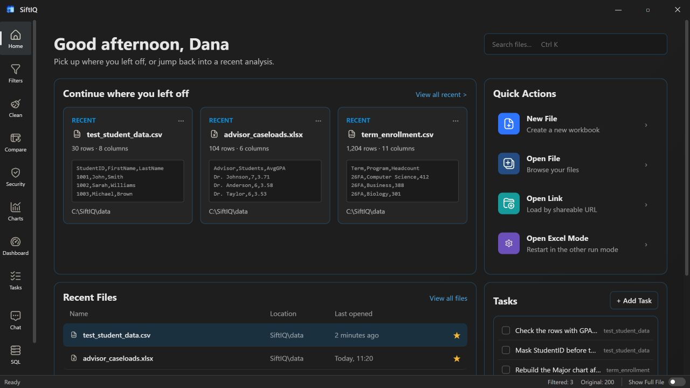
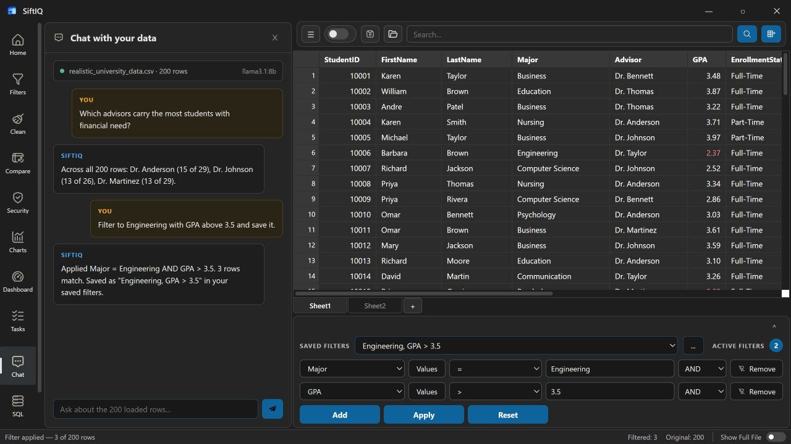

Desktop-first
Work directly with files in the storage locations you choose.
 SiftIQ
Get SiftIQ
SiftIQ
Get SiftIQ
Desktop intelligence for real-world data
Open your file. Ask a question. Build the answer. SiftIQ brings SQL, AI-assisted analysis, dashboards, and automation into one fast, private desktop workspace.

One connected workspace
Explore visually, query precisely, or simply describe what you need. Every path leads back to the same data, without repeated exports or lost context.
Ask in plain language
Filter, summarize, calculate, and create visualizations by describing the outcome you need.

Privacy by architecture
SiftIQ is desktop-first. Your files can remain on your device, local natural-language analysis works offline, and optional AI integrations stay under your control.
Work directly with files in the storage locations you choose.
Choose OpenAI, Ollama, or local natural-language tools.
Core local workflows do not require a hosted AI service.
Interactive product tour
Launch the real interface in a focused preview, explore the workspace, and move through the same states shown above.
Your next answer is already in the data
Bring desktop-grade analytics to the files you already use.
Get SiftIQ for Windows